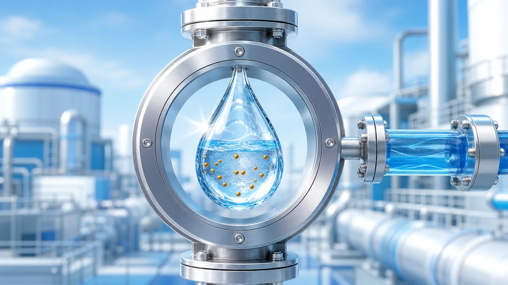
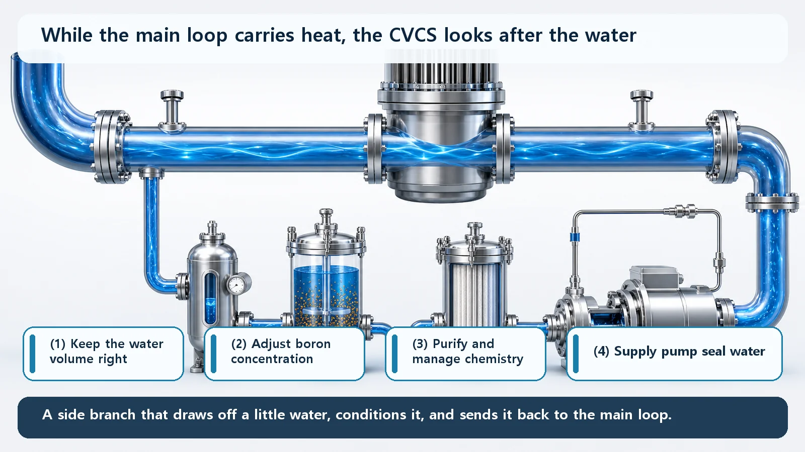
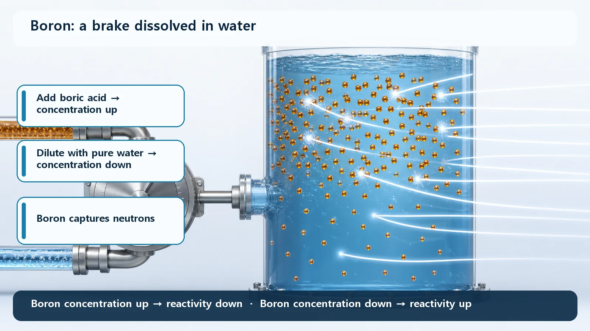

Reactor Types & Plant Systems · 191
The Reactor's Quiet Housekeeper — The Chemical and Volume Control System (CVCS)
A side branch of the main coolant loop that tops up, drains, filters and doses the reactor's water, and holds the dial on the dissolved boron brake.

The Chemical and Volume Control System (CVCS) is the reactor's water housekeeper. Attached to the main reactor coolant loop of a pressurized water reactor, it keeps the amount of water right, adjusts the dissolved boron that acts as a neutron brake, keeps the water clean and chemically balanced, and supplies seal water to the big coolant pumps. It is an operations support system, not the main cooling system and not an emergency shutdown device.
A long, scary name that is simpler than it sounds
Anyone who keeps an aquarium healthy for years knows the real work isn't the fish, it's the water: top it up when it evaporates, drain some when it's too full, filter it, and keep its chemistry right. A nuclear reactor has a water housekeeper too.
Take the name one word at a time. "Volume" means the amount of water, "Chemical" means the water's chemical condition, and "Control" means keeping it adjusted. So the system controls the amount and the chemistry of the reactor's water.
Water travels around a large loop, the reactor coolant system, carrying heat away from the core. If that loop is the plant's main stream, the CVCS is a side channel beside it: it draws off a little water, conditions it, and sends it back, like the filter and level control hanging off the side of an aquarium.

Four jobs done behind the scenes
1. Keeping the water volume right. Reactor water expands when it heats up and contracts when it cools, and a tiny amount seeps out at places such as pump shafts. The CVCS pushes water in when there is too little (charging) and draws it out when there is too much (letdown), keeping the system's water inventory, and the pressurizer level that indicates it, near its target.
2. Adjusting dissolved boron. Reactor water carries boron dissolved as boric acid, and boron is very good at capturing neutrons. Since neutrons keep fission going, more boron calms the reaction and less boron lets it pick up. The CVCS tunes this dissolved brake by adding boric acid or by diluting with pure water.
3. Keeping the water clean. Water circulating through a hot environment with radiation passing through it can pick up corrosion debris and other impurities. The CVCS passes the letdown water through ion-exchange resins and filters, keeps the water's pH at the right level so metal piping doesn't corrode, and holds down dissolved oxygen.
4. Supplying pump seal water. The reactor coolant pumps have seals that stop hot, high-pressure water escaping along their spinning shafts. The CVCS feeds clean water to those seals at the right pressure, helping them seal well and protecting them from damage.
A closer look at the boron brake

Raise the boron concentration (by adding boric acid) and the reaction across the whole core is held down; lower it (by diluting with water) and the reaction picks up:
Boron concentration ↑ → reactivity ↓ / Boron concentration ↓ → reactivity ↑
A reactor also has control rods that slide in and out of the core. The two share the work:
| Control rods | Dissolved boron (CVCS) | |
|---|---|---|
| How it acts | Mechanical | Chemical |
| Speed | Fast | Slow |
| Reach | Concentrated near where they are inserted | Uniform across the whole core |
| Typical job | Moment-to-moment adjustments | Slow, core-wide change as fuel is used over months |
The CVCS is the hand on the boron dial.
Easy things to mix up
"The CVCS cools the reactor." No. Carrying heat away from the core is the job of the reactor coolant system. The CVCS manages the amount and condition of that water; it is not the main heat carrier.
"The CVCS is like the control rods or an emergency shutdown device." CVCS boron adjustment is slow management during normal operation; shutting the reactor down quickly is handled by other means. In some plants the CVCS charging pumps are designed to double as high-pressure safety injection pumps in an emergency, but that does not make the CVCS itself emergency core cooling equipment.
This explainer deliberately gives no specific design numbers such as boron concentration, flow rates or temperatures. These values differ considerably from plant to plant and from one fuel cycle to the next.
Key takeaways
The CVCS keeps the reactor coolant at just the right amount and in just the right condition: it balances charging and letdown, uses dissolved boron for slow, uniform, core-wide reactivity control, purifies the water and manages its chemistry, and feeds seal water to the coolant pumps. It isn't glamorous, but it is part of why a plant can run steadily for a long time.